| Entry | DL-20261118-08 |
|---|---|
| Session | S01, turn 7 |
| Version | 0.7.1 |
| Branch | claude/intelligent-cannon-d1nqq6 |
| Base commit | 96682ff4c141 |
| Started | Nov 18, 2026, 7:58 PM EST |
| Recorded | Nov 18, 2026, 10:30 PM EST |
| Tickets | SC-003, SC-005, SC-009, SC-015 |
| Workstreams | WS-ENV |
| Status | complete |
Story images, a motion and depth system for the public site, and an upload fix found by red-teaming the live configuration
Summary
Paul asked for photographs, GSAP scroll dynamics, style improvements and "massive tightening", neo-skeuomorphic depth, more parallax layers, and text and image motion that is cohesive and can be retuned. (GSAP is the GreenSock animation library; ScrollTrigger is its scroll-driven part.) Live now at https://seafood-confidential-preview.web.app:
- Photographs. Six sample stories carry public-domain photographs, each credited under its picture.
- Motion. Layered parallax. Titles and images animate in, and reverse when the reader scrolls back.
- Depth. Raised and recessed surfaces, lit from one direction.
- Tuning. Everything is set from the design tokens, with three presets, and readers have a switch to turn animation off.
- Lead images in the desk. Any story can have a lead image, tied to a cleared rights record. Agents still never publish images.
Red team. Testing the desk's own container with Cloud Run's limits found that a large photograph would have crashed the live desk, and that uploads over 10 MB failed. Version 0.7.1 fixes both, names HEIC files, and closes a font caching gap. The live desk now runs with 1 GiB (revision sc-desk-00005-dw7).
Not yet run live:
- an upload through the live desk;
- a publication by the live desk itself (the samples were published by an operator run of the same code).
What changed
Public site (v0.7.0; apps/desk/site-src/, src/lib/site/build.ts):
- Photographs:
<picture>with AVIF first and WebP as the fallback, at 480 to 2400 px, cropped around a focal point set by CSS classes (the strict CSP allows no inline styles);- a wide hero with caption and credit, and image cards;
- a drawn plate of the section for stories without an image;
og:imagefor previews on social media.
- Motion (GSAP 3.15.1 with ScrollTrigger, self-hosted;
site-src/motion.js):- parallax masthead layers: bathymetry, contour linework, light and type;
- titles rising word by word, with their exact text kept for screen readers;
- images opening from the edges and developing into colour;
- reveals that reverse on scroll-back, section rules that draw, a reading-progress bar, and a lead panel that leans toward the pointer.
- Retuning and turning it off:
SITE_MOTIONpickscalm,standard,expressiveoroff, from the motion tokens.- The footer switch is remembered, and
prefers-reduced-motionturns motion off. - Every page is complete without JavaScript, with a 2.5-second failsafe if the script never arrives.
- Turning motion off restores the server's HTML exactly.
- Depth and tightening:
- Design tokens v0.2 add
space,radius,elevation(per theme, one light from above) andmotion(durations, easings, distances, parallax depths, presets). - The stylesheet was rewritten on them: a tighter type scale, a breakout grid, raised cards and lead panel, recessed sources, bevelled chips, a sticky frosted section bar that marks the current section, faded edges on the phone navigation, an ink footer, and print styles.
- The contour linework is generated by a seeded script (
scripts/build-contours.mjs).
- Design tokens v0.2 add
Desk (v0.7.0):
- Lead image card. It sits on the story page, with a preview, rights status, alternative text, caption, credit and focal point.
- Uploads go through a route handler (
/stories/<id>/image) that checks the session, origin and size before reading the body. - Processing. sharp, a wrapper for the libvips image library, makes the AVIF and WebP renditions. It applies EXIF orientation and removes all metadata, location included.
- Operator CLI:
pnpm --filter @sc/desk images.
Database (migration 20261119120000_story_images.sql, 34 new pgTAP tests):
- Storage.
app.story_imagesholds each image, tied to a rights record of the same story. Renditions and originals sit in private tables reached only through checked functions. - Publishing. Publishing pins the image, and
app.site_mediahands the publisher the files under the job's claim token. - Agents. The agent gate
no_imageskeeps them away from stories with images. - Security fix. API roles can no longer insert a story with publication fields set.
v0.7.1, from the red team below:
- Memory-bounded image processing:
- one upright master the size of the largest rendition (JPEG and WebP shrink while decoding);
- the largest rendition capped at 2400 px and about 4.3 megapixels;
- one image at a time per server, with libvips' cache off;
MALLOC_ARENA_MAX=2in the image.
- Upload size.
proxyClientMaxBodySizeis 16 MB, so the advertised 15 MB limit is real. - HEIC. HEIC photographs get a message saying what they are and how to export them.
- Asset caching. The asset build versions every file the stylesheet loads by content, and the font preload uses the same address.
- Memory. The live service runs with 1 GiB.
Live (Paul's Supabase and Google Cloud projects):
- Database. The migration was applied through the Management API in one transaction, with its history record, and grants were checked.
- Desk. v0.7.0 went live as revision
sc-desk-00004-79x(Cloud Build fromgit archiveof c0f06c7), then v0.7.1 assc-desk-00005-dw7(b99e04c,--memory 1Gi). - Photographs. Six were attached on the hosted database (10 renditions each, hashes re-checked inside the database). Six republish jobs pinned them; the last release has 95 files, 60 of them image renditions.
Docs:
- ADR-006 (Proposed);
- CHANGELOG 0.7.0 and 0.7.1;
docs/DESK.md,docs/DEPLOYMENT.mdanddocs/LAUNCH_PREVIEW.md, including memory and upload limits;THIRD_PARTY_NOTICES.md: GSAP's licence, each photograph's source and licence, sharp and libvips;- the sc-visual-codex skill's new "Motion and depth" section, reusable for later projects.
Decisions
- Images live in the desk database for now (ADR-006, Proposed).
- A publication reads text and images in one claim-fenced transaction.
- The desk needs no storage credential, and no public bucket exposes unpublished images.
- Backups stay one system.
- The ADR names when to move renditions to Cloud Storage: a 2 GB database, or builds loading more than about 200 MB of images.
- One lead image per story, tied to a rights record, pinned at publish. What is live is what was published, for images too, and agents never publish a story with an image. This follows ADR-005 and the playbook's image rules.
- GSAP, self-hosted, under Webflow's no-charge Standard licence.
- It is not open source. Its terms allow this commercial use, require the notices to stay intact, and can change.
- Nothing on the site depends on it to be read, so CSS scroll-driven animation is a fallback if the terms change.
- Sample photographs are U.S. government works and a Library of Congress dedication.
- Every licence was checked on its Commons file page, not inferred.
- Each picture's credit names the agency or photographer.
- The AI-written sample has no photograph.
- The live desk gets 1 GiB. The fixed code passed with 512 MiB, but the server's high-water mark reached 509 MiB, and Cloud Run also holds site build files in memory. At preview traffic 1 GiB stays inside Cloud Run's free tier.
- The fixes ship as 0.7.1, not a rebuilt 0.7.0. A 0.7.0 build was already live, and each version should name one build.
Problems and resolutions
Found by red-teaming the live configuration (v0.7.1):
- A 24-megapixel photograph would have crashed the live desk.
- The desk's own container ran with Cloud Run's limits (512 MiB, one CPU), and photographs were uploaded through the real route.
- v0.7.0 peaked at 483 MiB on a 12-megapixel phone photograph and was killed for running out of memory on a 24-megapixel one (EV-0064). Every rendition was decoded from a full-size copy.
- With the rewrite, 12 to 59 megapixels attach, one at a time and two at once (EV-0065).
- This is now the standard check for anything memory-heavy in the desk.
- Uploads over 10 MB were refused as "unreadable". Next.js's proxy layer buffers request bodies and silently cuts them at 10 MB; its log said so. The limit is now 16 MB.
- HEIC photographs were called damaged. sharp's bundled library has no HEIC decoder. The header check now names the format.
- Fonts and the contour art could stay stale for a year after a change. They are served
immutableunder unversioned names. Now each file the stylesheet loads carries a content version. A browser check confirmed one font request and no unused-preload warning.
Found by the test suites (v0.7.0):
- Postgres and the database tests:
- postgres.js double-encoded the renditions' JSON (
cannot get array length of a scalar); it now usestx.json(). The refusal mapping was narrowed so a fault on our side is not shown as a rights problem. - Attaching an image was refused while any publish job was queued; it now waits only for a job that is running.
- The private image tables lacked Row Level Security; it is on, and pgTAP checks it.
- postgres.js double-encoded the renditions' JSON (
- The public site:
- Split headlines duplicated their text for assistive technology; the words are now split with no hidden copy.
- Axe saw low contrast in the middle of an animation; the accessibility helper waits until GSAP is idle, which is how a reader sees the page.
- Turning motion off left a
scale(1.16)on pictures; the switch now removes every style it added.
- Playwright tests:
- The AI label assertion matched related-story cards; it is scoped to the article.
- A publish confirmation raced the result.
- Tooling:
- The operator CLI could not run under Node's type stripping (a constructor parameter property).
- The Management API refuses SQL bodies over about 3 MB, so the CLI writes base64 and leaves out a master that would not fit.
Sourcing the photographs:
- Wikimedia's rate limit (HTTP 429) on originals was avoided by using its standard thumbnail widths.
- Three candidates were too small, and the thumbnailer would have upscaled them; they were replaced.
- Links missing the
File:prefix were corrected in the manifest, the notices and the database.
Evidence
- EV-0058: v0.7.0 locally: pgTAP 272/272, Vitest 126/126, Playwright 32/32,
pnpm check, bundle scan. CI green on c0f06c7. - EV-0059: local site audit: 11 views, 0 axe violations, no overflow. Reduced motion, no-JS and the switch all work.
- EV-0060: migration applied to hosted Supabase. Desk v0.7.0 live; image route 401 without a session, 403 cross-origin.
- EV-0061: six photographs attached on hosted Supabase, and the site rebuilt with them (95 files, 60 renditions).
- EV-0062: live audit: 11 views, 0 axe violations.
/mediaserved immutable with the site's CSP. - EV-0063 (observation): an upload and a publication by the live desk had not run yet.
- EV-0064 (fail, defect IMG-0001): the v0.7.0 container was killed by a 24-megapixel upload, and uploads over 10 MB were cut off.
- EV-0065 (pass, IMG-0001 fixed): the v0.7.1 container attaches 12 to 59 megapixels, and two uploads at once, under 512 MiB.
- EV-0066: v0.7.1 tree: pgTAP 272/272, Vitest 131/131, Playwright 32/32,
pnpm check, bundle scan, and a single font request. - EV-0067: live page weight on a cold cache:
- 383 to 532 KB per page, and 755 KB for the iPhone home page;
- LCP (largest contentful paint) 0.38 to 1.2 s;
- CLS (layout shift) at most 0.022.
- EV-0068: desk v0.7.1 live with 1 GiB, with probes.
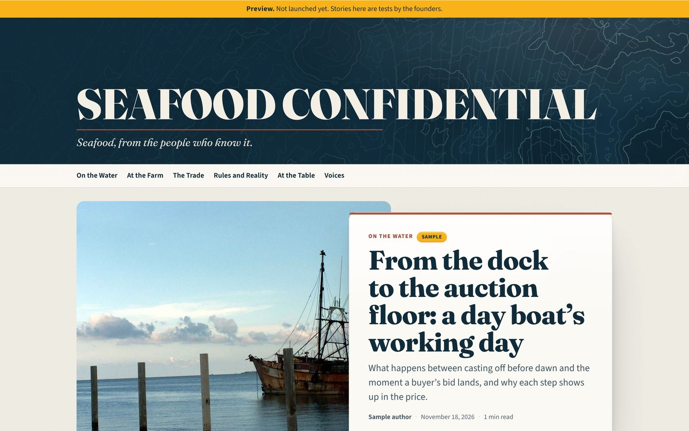
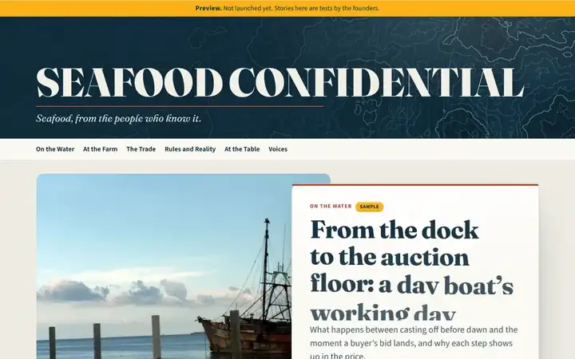
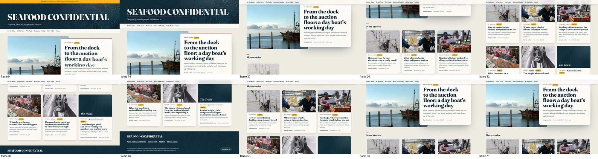
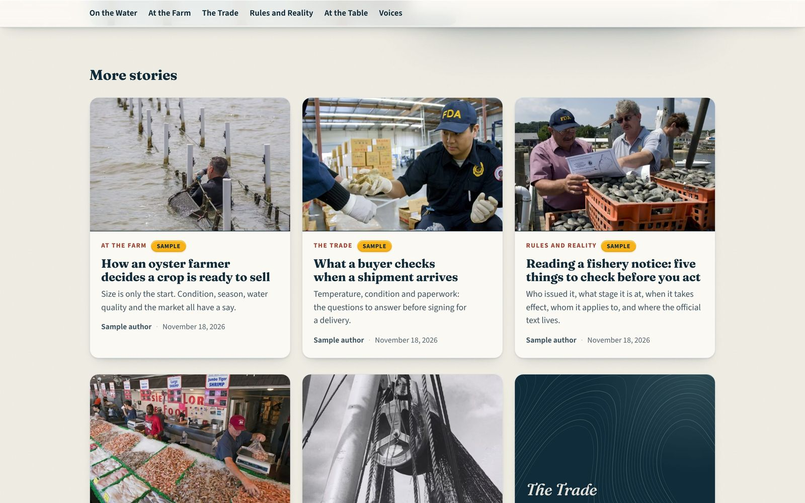
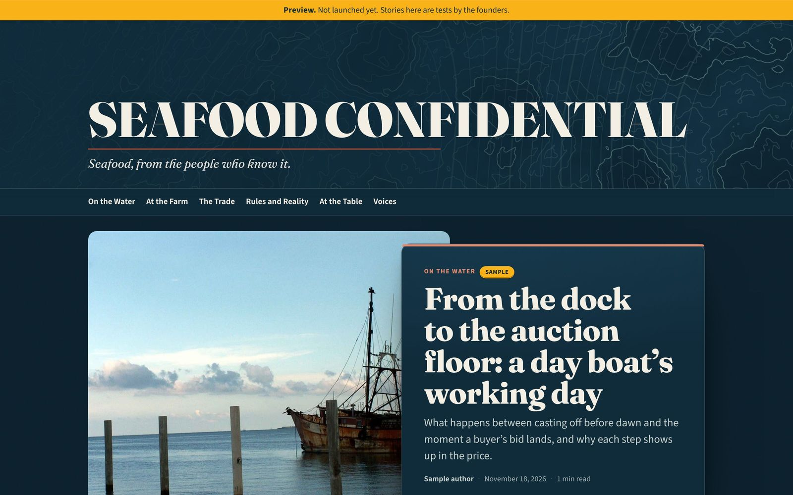
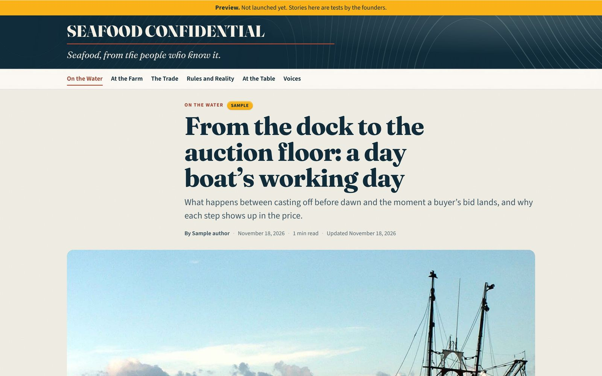
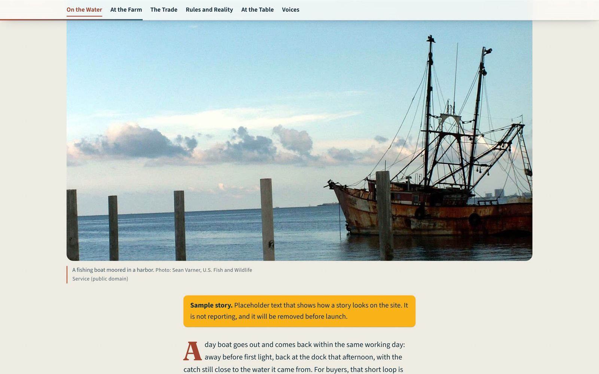
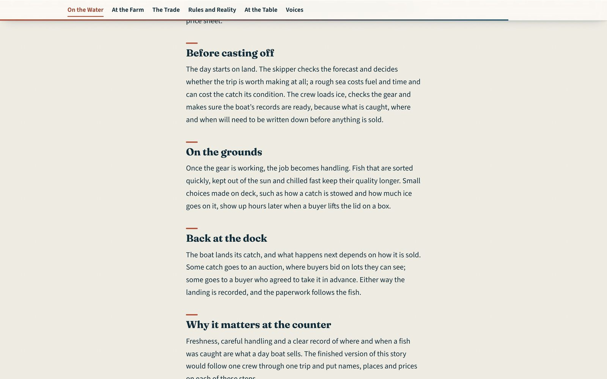
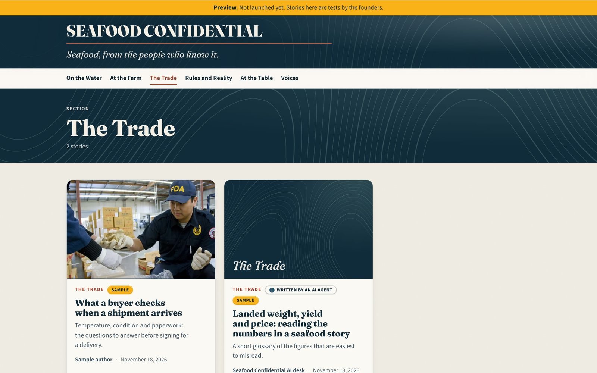
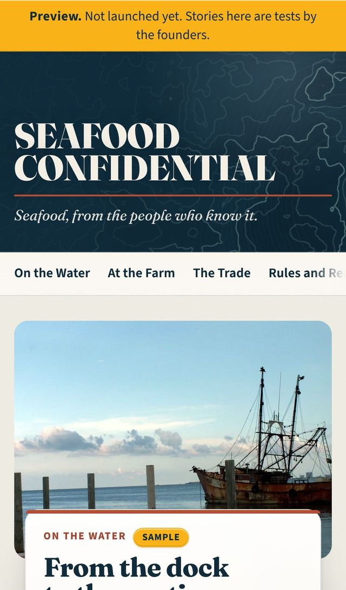
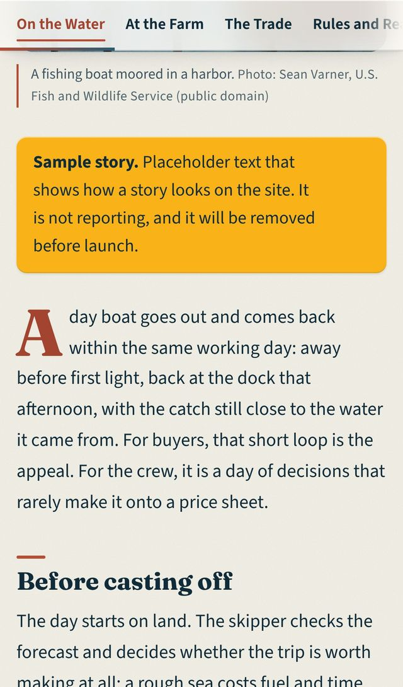
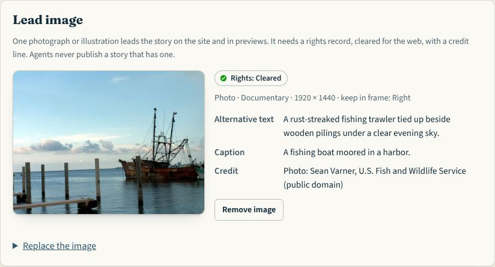
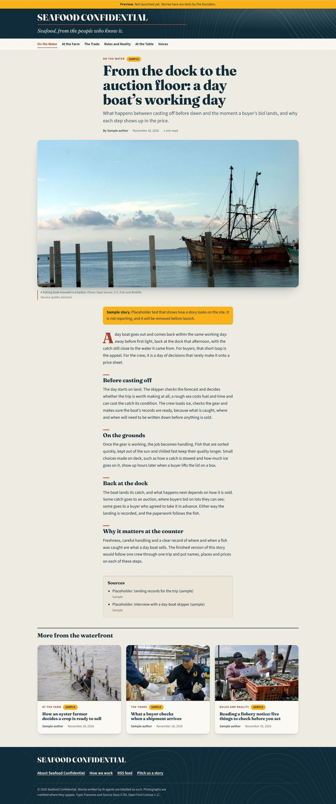
Risks and open questions
- Upload and publication by the live desk are still untested.
- Each was tested end to end locally.
- The upload was tested in the desk's own container with Cloud Run's limits.
- The publishing code has released the live site with an operator token.
- Paul's first update or upload is the first live run, and a failure shows on the story or Publishing page with its reason.
- GSAP's licence can change. It is proprietary and free of charge under Webflow's terms; the site does not depend on it to be read.
- Images make the database grow. ADR-006 names the review points. Today every build reads every published image; Firebase uploads only new ones.
- Processing takes 20 to 60 seconds on one CPU. The form says so. A lower AVIF effort is the first lever.
- Portrait photographs top out at about 1,700 px wide to bound memory. On a large high-density screen a portrait hero, cropped to landscape, is a little soft.
- Fonts are the largest item on a first visit (296 KB). The Fraunces files carry four variation axes, two of which (
SOFT,WONK) the site pins at zero. Its optical-size-and-weight files would cut the two faces from 271 KB to 149 KB. - The live site picks up the versioned font and contour addresses at its next publication. Until then it behaves as before.
- ADR-006 is Proposed. The founders should confirm images in the database and the GSAP licence.
Next actions
- Paul, security (carried from turn 5):
- delete the exposed Supabase secret key
seafood_confidential_launch; - rotate the Google Cloud key whose ID starts
3b4c8ef7; - revoke the Supabase access token when done.
- delete the exposed Supabase secret key
- Paul, first live run:
- sign in, in the same browser;
- open any sample and press "Update the published story". That also carries the versioned assets to the live site;
- then try a photograph: add a rights record first, then use "Lead image".
- Founders: confirm ADR-006, approve or rewrite the About and How we work drafts, and invite Dave.
- Optional: turn on the publishing sweep (one command in
docs/LAUNCH_PREVIEW.md). - Before real stories go out: remove the samples and their photographs (two passes of the removal script).
- Later:
- the smaller Fraunces files (271 KB to 149 KB on a first visit);
- moving image processing to a job if uploads become frequent;
- carried over: custom SMTP, an "Add a staff member" screen, and CI deploys with Workload Identity Federation.
Evidence referenced
| ID | Result | Summary | Observed |
|---|---|---|---|
| EV-0058 | pass | v0.7.0 locally: pgTAP 272/272 (34 new image tests), Vitest 126/126, Playwright 32/32, pnpm check clean, bundle scan clean; CI green on c0f06c7 | All exit 0. New end-to-end test: an owner adds a cleared rights record, uploads a JPEG carrying GPS EXIF, sees the preview, publishes; the public page has <picture> with AVIF first, the alt text, the credit and the focal class; both renditions are served with the right type and no EXIF. The suite also caught and fixed two bugs: the attach call double-encoded its JSON (postgres.js), and split headlines duplicated their text |
| EV-0059 | pass | Local site audit before deploy: 11 views with 0 axe violations and no overflow; reduced motion, no-JS and the animation switch verified | Home desktop/dark/iPhone 13, story desktop/iPhone 13, AI story (plate), black-and-white story, section, About, home and story with reduced motion: HTTP 200, axe 0, no overflow, every image loaded, no reveal left hidden. With JavaScript off the page is complete. The toggle turns motion off, is remembered after reload, and (after a fix found here) leaves no motion styles behind |
| EV-0060 | pass | Live: story images migration applied to hosted Supabase and the desk v0.7.0 deployed (revision sc-desk-00004-79x) | 3 tables, 3 triggers, RLS on the private files; the publisher may run site_media and site_snapshot; staff may attach but not read files; agents may not attach; 4 migrations recorded. Health {version: 0.7.0}; GET /stories/<id>/image without a session 401; a cross-origin upload 403 |
| EV-0061 | pass | Live: six public-domain sample photographs attached on hosted Supabase and the site rebuilt through the publishing functions | 6 images, 10 renditions each, every rendition's hash re-checked inside the database. Six jobs succeeded, each pinning its image; the last release has 95 files with 60 image renditions. The AI-written sample has no image, by design |
| EV-0062 | pass | Live audit of the v0.7.0 public site: 11 views with 0 axe violations and no overflow; images, motion, reduced motion, no-JS and the switch work in production | All views HTTP 200, axe 0, no overflow, every image loaded, no reveal left hidden; motion standard with reduced motion off; the toggle reverts with no styles left and is remembered. /media/*.avif is image/avif with Cache-Control public, max-age=31536000, immutable and the site CSP; GSAP, ScrollTrigger, motion scripts and contours.svg 200; robots Disallow and 7 Sample chips unchanged |
| EV-0063 | info | Not yet exercised live: an image upload through the desk on Cloud Run, and Cloud Run publishing itself | The desk image contains sharp and libvips (checked in the standalone build). Processing a 2400 px photograph takes about 20 to 35 seconds on one CPU, mostly AVIF. Paul's first upload or update is the first live run; a failure shows on the story page with a reason |
| EV-0064 | fail | Red team: the v0.7.0 desk, in its own container with Cloud Run's limits, is killed by a 24-megapixel upload, and refuses uploads over 10 MB as unreadable | 12 MP (2.6 MB): attached in 30.9 s, server resident peak 483 MiB of 512. 24 MP (5.1 MB): the container was OOM-killed after 15 s (exit 137, OOMKilled=true), the request hung up and the desk was down. Separately, a 12.6 MB upload returned 'unreadable' in 0.1 s; the log said 'Request body exceeded 10MB ... Only the first 10MB will be available' (the Next.js proxy's default body limit). Standalone, sharp alone peaked at 385 MiB (12 MP) to 939 MiB (59 MP): every rendition was decoded from a full-size PNG intermediate |
| EV-0065 | pass | v0.7.1 desk container under 512 MiB and one CPU: 12 to 59 megapixel uploads up to 14.4 MiB attach, one at a time and two at once, with no memory-limit hits | Charged container memory peaks (server VmHWM in brackets): 12 MP 300 MiB (360) in 28.0 s; 24 MP portrait 342 (403) in 41.4 s; 45 MP 376 (436) in 19.3 s; 59 MP 12.6 MB 446 (507) in 23.4 s; 59 MP 14.4 MiB 456 (509) in 22.6 s; 24 MP and 59 MP together 391 (452), 41.6 s and 65.7 s. All HTTP 303 ?image=attached, failcnt 0, OOMKilled false, health 200, no body-limit warnings. Because the high-water mark nears 512 MiB, the service moves to 1 GiB |
| EV-0066 | pass | v0.7.1 tree: pgTAP 272/272, Vitest 131/131, Playwright 32/32, pnpm check, bundle scan; font preload fetched once at its versioned address | All exit 0. New tests: HEIC detection, the rendition area cap, one-at-a-time processing, the rotated rendition sizes, the 3000 px master path, and the versioned font preload. The stylesheet now loads contours.svg and each font with ?v=<content hash>; the masthead font is requested once, matching its preload, with no unused-preload warning |
| EV-0067 | pass | Live site page weight and Core Web Vitals, cold cache: 383 to 532 KB per page on desktop and iPhone 13 except the iPhone home (755 KB); LCP 0.38 to 1.2 s; CLS at most 0.022 | Fonts are the largest item on a first visit (296 KB; cached for a year after). Images: 25 to 172 KB per page, 391 KB on the iPhone home (six photographs at three times the density). Scripts 50 to 54 KB (GSAP, ScrollTrigger, motion). Every asset URL carries a content version; /assets and /media are served immutable for a year |
| EV-0068 | pass | Live: desk v0.7.1 on Cloud Run revision sc-desk-00005-dw7 with 1 GiB; image route guards hold, and a 12.6 MB request no longer hits the 10 MB body cut-off | Revision sc-desk-00005-dw7 serves 100% of traffic with cpu=1, memory=1Gi. /api/health {version: 0.7.1}. GET /stories/<id>/image without a session 401; cross-origin POST 403; same-origin POST without a session 303 to /sign-in; a same-origin 12.6 MB multipart POST 303 in 1.7 s. The revision's log has no 'Request body exceeded' warning; its only warnings are the request logs of the 401 and 403 probes. /sign-in and /pitch 200 with the nonce CSP, HSTS and X-Robots-Tag noindex |